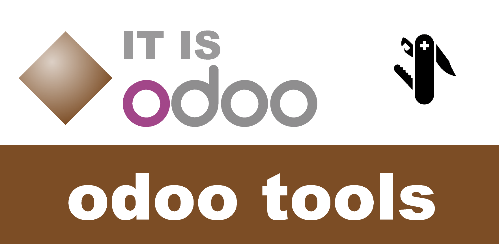
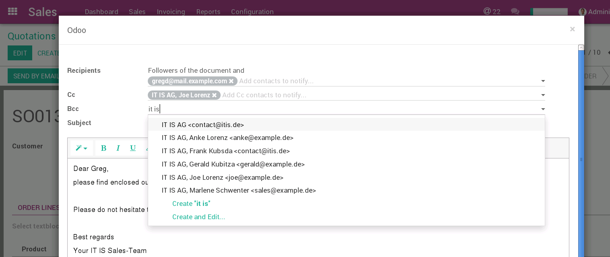

<section class="oe_container oe_separator"></section>

<section class="oe_container">
	</img>
	<div class="oe_row oe_spaced">
		<div class="oe_span6">
			<h1 class="oe_slogan">Enhanced Mail</h1>
		</div>
		<div class="oe_span6">
			<div class="oe_demo oe_picture oe_screenshot">
				
			</div>
		</div>
		<div class="oe_span12">
			<ul>
				<li><h2>Add contacts/receipients to CC and/or BCC</h2></li>
				<li><h2>Save time by configuring auto-followers to your
						mails added automatically for defined models</h2></li>
			</ul>
		</div>

	</div>
</section>
<section class="oe_container oe_separator"></section>